[ ]:
from PTLF.lab import lab_setup
lab_setup(settings_path='path/to/your/project/dir/project_name.json')
[ ]:
# from CompBase.models import
[ ]:
expargs = {
'dataset':{
'loc':'CompBase.datasets.DS02',
'args':{ }
},
'model':{
'loc': 'CompBase.models.SimpleNNe',
'args': {'embedding_info': [(7, 4),
(16, 84),
(7, 40),
(6, 30),
(5, 30),
(14, 790),
(41, 21)],
'continuous_dim': 6,
'hidden_dim': 648, 'drop':0.3
}
},
# 'model':{
# 'loc': 'CompBase.models.SimpleNN',
# 'args': {"h1_dim":120, "h2_dim":100, 'drop':0.3,
# # 'encoder':{
# # 'loc': 'CompBase.models.SimpleNN',
# # 'args': {
# # "h1_dim":120,
# # "h2_dim":1000,
# # 'drop':0.3
# # }
# # }
# }
# },
"loss":{
'loc':"CompBase.losses.BCElogit",
'args':{},
},
'optimizer':{
'loc':'CompBase.optimizers.OptAdam',
'args':{}
},
"metrics":{
"accuracy":{
'loc':"CompBase.metrics.BinAcc",
'args':{}
} ,
"auroc":{
'loc':"CompBase.metrics.AUROC",
'args':{}
} ,
"f1score":{
'loc':"CompBase.metrics.AUPRC",
'args':{}
} ,
"auprc":{
'loc':"CompBase.metrics.F1Score",
'args':{}
}
},
"train_data_src": r"D:\stdML\Py310\Adult\Prepared\raw\train.csv",
"val_data_src": r"D:\stdML\Py310\Adult\Prepared\raw\valid.csv",
# "train_data_src": r"D:\stdML\Py310\Adult\Prepared\raw2\train.csv",
# "val_data_src": r"D:\stdML\Py310\Adult\Prepared\raw2\valid.csv",
"train_batch_size":36,
"val_batch_size":36
}
[40]:
expargs1 = {
'model':{
'loc': 'CompBase.models.SimpleNN',
'args': {"h1_dim":1200, "h2_dim":100, 'drop':0.2}
},
'optimizer':{
'loc':'CompBase.optimizers.OptAdam',
'args':{'learning_rate':0.004}
}
}
[ ]:
from PyTorchLabFlow.experiment import *
[42]:
get_exps()
[42]:
['exp1', 'exp2', 'exp3']
[43]:
P = PipeLine()
P.match_args(expargs)
[43]:
False
[44]:
P.new(args=expargs.copy(), expid="exp4")
# P.use(expid='exp3', use_exp='exp2', args=expargs1)#, epoch=3,trained=True)
# P.load(expid='exp1')
P.cnfg
D:\stdML\Py310\Adult\ProjectInternal\Lib\CompBase\datasets.py:90: FutureWarning: Downcasting behavior in `replace` is deprecated and will be removed in a future version. To retain the old behavior, explicitly call `result.infer_objects(copy=False)`. To opt-in to the future behavior, set `pd.set_option('future.no_silent_downcasting', True)`
self.df[col] = self.df[col].replace(mapping)
D:\stdML\Py310\Adult\ProjectInternal\Lib\CompBase\datasets.py:93: FutureWarning: Downcasting behavior in `replace` is deprecated and will be removed in a future version. To retain the old behavior, explicitly call `result.infer_objects(copy=False)`. To opt-in to the future behavior, set `pd.set_option('future.no_silent_downcasting', True)`
self.df[self.label_col] = self.df[self.label_col].replace({'<=50K': 0, '>50K': 1})
D:\stdML\Py310\Adult\ProjectInternal\Lib\CompBase\datasets.py:90: FutureWarning: Downcasting behavior in `replace` is deprecated and will be removed in a future version. To retain the old behavior, explicitly call `result.infer_objects(copy=False)`. To opt-in to the future behavior, set `pd.set_option('future.no_silent_downcasting', True)`
self.df[col] = self.df[col].replace(mapping)
D:\stdML\Py310\Adult\ProjectInternal\Lib\CompBase\datasets.py:93: FutureWarning: Downcasting behavior in `replace` is deprecated and will be removed in a future version. To retain the old behavior, explicitly call `result.infer_objects(copy=False)`. To opt-in to the future behavior, set `pd.set_option('future.no_silent_downcasting', True)`
self.df[self.label_col] = self.df[self.label_col].replace({'<=50K': 0, '>50K': 1})
training: 0%|▏ | 3/880 [00:00<00:33, 26.01it/s]
validation: 2%|▋ | 3/189 [00:00<00:06, 30.19it/s]
[44]:
{'expid': 'exp4',
'args': {'dataset': {'loc': 'CompBase.datasets.DS02', 'args': {}},
'model': {'loc': 'CompBase.models.SimpleNNe',
'args': {'embedding_info': [(7, 4),
(16, 84),
(7, 40),
(6, 30),
(5, 30),
(14, 790),
(41, 21)],
'continuous_dim': 6,
'hidden_dim': 648,
'drop': 0.3}},
'loss': {'loc': 'CompBase.losses.BCElogit', 'args': {}},
'optimizer': {'loc': 'CompBase.optimizers.OptAdam', 'args': {}},
'metrics': {'accuracy': {'loc': 'CompBase.metrics.BinAcc', 'args': {}},
'auroc': {'loc': 'CompBase.metrics.AUROC', 'args': {}},
'f1score': {'loc': 'CompBase.metrics.AUPRC', 'args': {}},
'auprc': {'loc': 'CompBase.metrics.F1Score', 'args': {}}},
'train_data_src': 'D:\\stdML\\Py310\\Adult\\Prepared\\raw\\train.csv',
'val_data_src': 'D:\\stdML\\Py310\\Adult\\Prepared\\raw\\valid.csv',
'train_batch_size': 36,
'val_batch_size': 36},
'used': '',
'best': {'epoch': 0},
'last': {'epoch': 0}}
[45]:
get_exps()
[45]:
['exp1', 'exp2', 'exp3', 'exp4']
[ ]:
[46]:
P.prepare()
P.train(num_epochs=10,verbose=["auroc","auprc"])
D:\stdML\Py310\Adult\ProjectInternal\Lib\CompBase\datasets.py:90: FutureWarning: Downcasting behavior in `replace` is deprecated and will be removed in a future version. To retain the old behavior, explicitly call `result.infer_objects(copy=False)`. To opt-in to the future behavior, set `pd.set_option('future.no_silent_downcasting', True)`
self.df[col] = self.df[col].replace(mapping)
D:\stdML\Py310\Adult\ProjectInternal\Lib\CompBase\datasets.py:93: FutureWarning: Downcasting behavior in `replace` is deprecated and will be removed in a future version. To retain the old behavior, explicitly call `result.infer_objects(copy=False)`. To opt-in to the future behavior, set `pd.set_option('future.no_silent_downcasting', True)`
self.df[self.label_col] = self.df[self.label_col].replace({'<=50K': 0, '>50K': 1})
D:\stdML\Py310\Adult\ProjectInternal\Lib\CompBase\datasets.py:90: FutureWarning: Downcasting behavior in `replace` is deprecated and will be removed in a future version. To retain the old behavior, explicitly call `result.infer_objects(copy=False)`. To opt-in to the future behavior, set `pd.set_option('future.no_silent_downcasting', True)`
self.df[col] = self.df[col].replace(mapping)
D:\stdML\Py310\Adult\ProjectInternal\Lib\CompBase\datasets.py:93: FutureWarning: Downcasting behavior in `replace` is deprecated and will be removed in a future version. To retain the old behavior, explicitly call `result.infer_objects(copy=False)`. To opt-in to the future behavior, set `pd.set_option('future.no_silent_downcasting', True)`
self.df[self.label_col] = self.df[self.label_col].replace({'<=50K': 0, '>50K': 1})
Data loaders are successfully created
Epoch 1: 100%|███████████████| 880/880 [00:10<00:00, 81.97it/s, auprc=0.396, auroc=0.664]
Epoch 1: 100%|████████████████████████████████████████| 189/189 [00:01<00:00, 138.17it/s]
Best Model Weights Updated: Epoch 1 - Val Loss: 0.4523817444289172
Epoch 2: 100%|███████████████| 880/880 [00:11<00:00, 78.49it/s, auprc=0.518, auroc=0.828]
Epoch 2: 100%|████████████████████████████████████████| 189/189 [00:01<00:00, 140.77it/s]
Best Model Weights Updated: Epoch 2 - Val Loss: 0.41131915735504615
Epoch 3: 100%|███████████████| 880/880 [00:10<00:00, 82.53it/s, auprc=0.561, auroc=0.859]
Epoch 3: 100%|████████████████████████████████████████| 189/189 [00:01<00:00, 127.00it/s]
Best Model Weights Updated: Epoch 3 - Val Loss: 0.4878612053457391
Epoch 4: 100%|███████████████| 880/880 [00:10<00:00, 84.29it/s, auprc=0.552, auroc=0.859]
Epoch 4: 100%|████████████████████████████████████████| 189/189 [00:01<00:00, 124.05it/s]
Best Model Weights Updated: Epoch 4 - Val Loss: 0.38180170890200077
Epoch 5: 100%|███████████████| 880/880 [00:10<00:00, 80.05it/s, auprc=0.544, auroc=0.867]
Epoch 5: 100%|████████████████████████████████████████| 189/189 [00:01<00:00, 148.01it/s]
Best Model Weights Updated: Epoch 5 - Val Loss: 0.3858235586414892
Epoch 6: 100%|███████████████| 880/880 [00:11<00:00, 79.54it/s, auprc=0.536, auroc=0.869]
Epoch 6: 100%|████████████████████████████████████████| 189/189 [00:01<00:00, 141.72it/s]
Best Model Weights Updated: Epoch 6 - Val Loss: 0.4021070497849631
Epoch 7: 100%|████████████████| 880/880 [00:12<00:00, 70.39it/s, auprc=0.506, auroc=0.86]
Epoch 7: 100%|████████████████████████████████████████| 189/189 [00:01<00:00, 129.73it/s]
Best Model Weights Updated: Epoch 7 - Val Loss: 0.34908441741945884
Epoch 8: 100%|███████████████| 880/880 [00:12<00:00, 69.28it/s, auprc=0.545, auroc=0.876]
Epoch 8: 100%|████████████████████████████████████████| 189/189 [00:01<00:00, 145.49it/s]
Best Model Weights Updated: Epoch 8 - Val Loss: 0.36938819383818006
Epoch 9: 99%|██████████████▊| 872/880 [00:12<00:00, 90.78it/s, auprc=0.516, auroc=0.877]D:\Anna\envs\py310\lib\site-packages\sklearn\metrics\_ranking.py:379: UndefinedMetricWarning: Only one class is present in y_true. ROC AUC score is not defined in that case.
warnings.warn(
D:\Anna\envs\py310\lib\site-packages\sklearn\metrics\_ranking.py:1033: UserWarning: No positive class found in y_true, recall is set to one for all thresholds.
warnings.warn(
D:\Anna\envs\py310\lib\site-packages\sklearn\metrics\_classification.py:1565: UndefinedMetricWarning: F-score is ill-defined and being set to 0.0 due to no true nor predicted samples. Use `zero_division` parameter to control this behavior.
_warn_prf(average, modifier, f"{metric.capitalize()} is", len(result))
Epoch 9: 100%|█████████████████| 880/880 [00:12<00:00, 70.23it/s, auprc=0.515, auroc=nan]
Epoch 9: 100%|████████████████████████████████████████| 189/189 [00:01<00:00, 141.98it/s]
Best Model Weights Updated: Epoch 9 - Val Loss: 0.34827179418354437
Epoch 10: 100%|██████████████| 880/880 [00:11<00:00, 73.88it/s, auprc=0.549, auroc=0.883]
Epoch 10: 100%|███████████████████████████████████████| 189/189 [00:01<00:00, 142.13it/s]
Best Model Weights Updated: Epoch 10 - Val Loss: 0.3606628721195554
Finished Training
[29]:
m = plot_metrics()
for i in m:
display(m[i].figure)
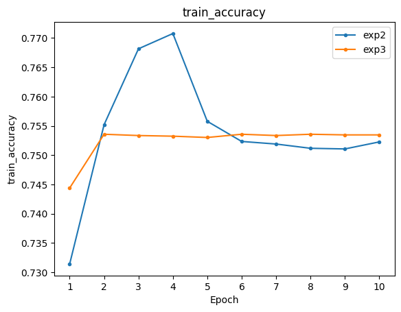
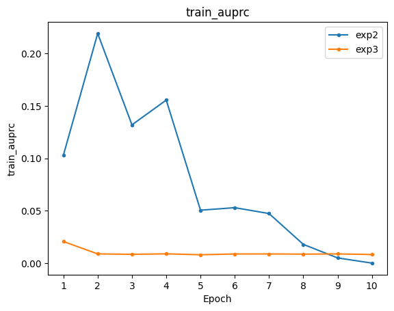
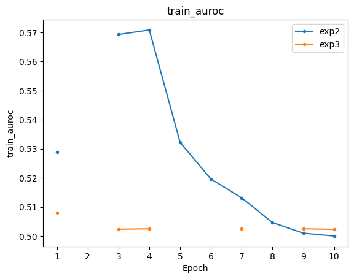
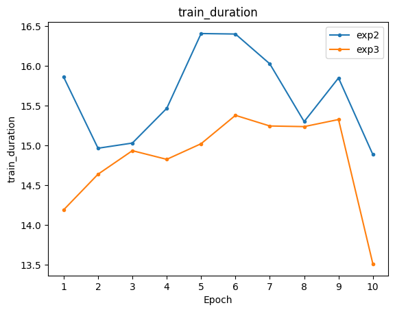
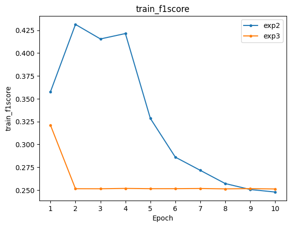
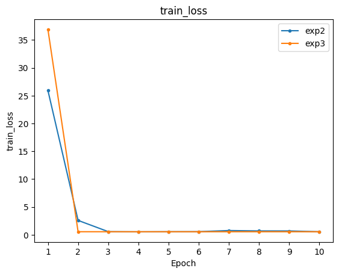
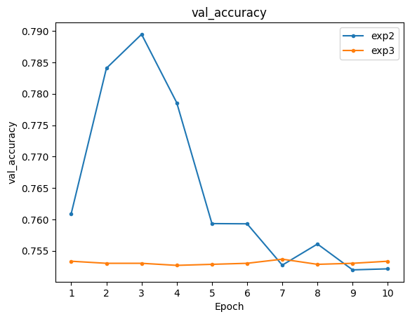
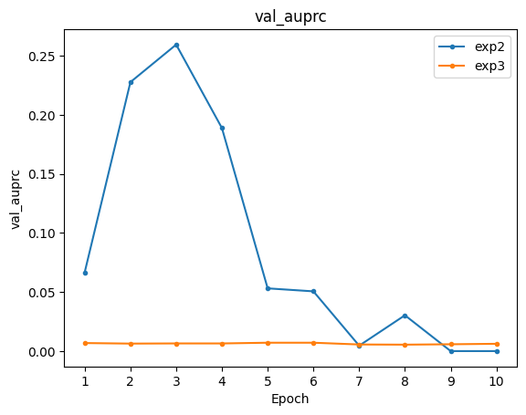
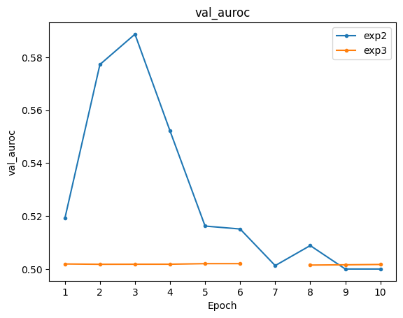
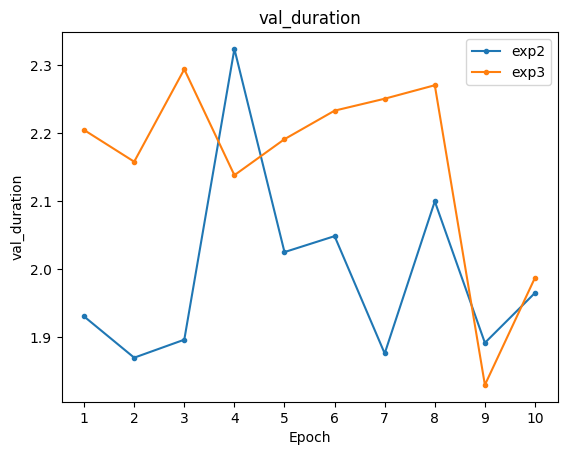
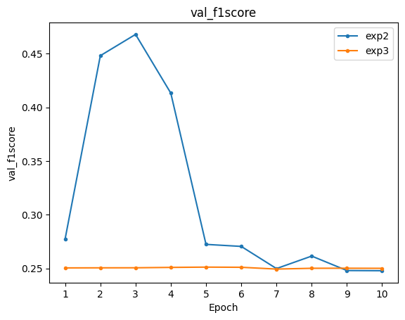
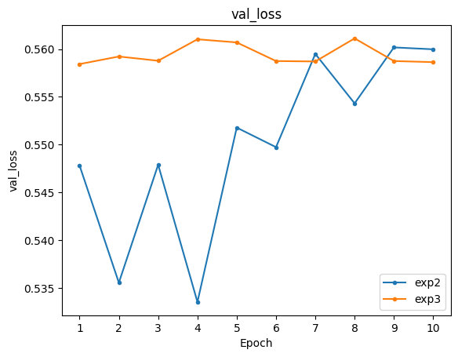
[13]:
get_histories()
[13]:
{'exp2': epoch train_accuracy train_auroc train_f1score train_auprc train_loss \
0 1 0.731408 0.528928 0.357668 0.103142 25.921694
1 2 0.755193 NaN 0.431358 0.219269 2.592707
2 3 0.768166 0.569325 0.415434 0.132006 0.574503
3 4 0.770770 0.570877 0.421350 0.155638 0.545393
4 5 0.755777 0.532181 0.328389 0.050506 0.564451
5 6 0.752336 0.519609 0.285983 0.052930 0.573449
6 7 0.751894 0.513134 0.271512 0.047304 0.772796
7 8 0.751168 0.504610 0.257031 0.017875 0.703587
8 9 0.751057 0.500976 0.250528 0.004961 0.698215
9 10 0.752257 0.500000 0.247743 0.000000 0.559873
train_duration val_accuracy val_auroc val_f1score val_auprc val_loss \
0 15.862243 0.760936 0.519134 0.277387 0.066628 0.547808
1 14.967815 0.784063 0.577269 0.448099 0.227810 0.535542
2 15.032975 0.789466 0.588718 0.467914 0.259575 0.547890
3 15.469236 0.778573 0.552170 0.413271 0.188910 0.533520
4 16.410073 0.759337 0.516231 0.272389 0.053129 0.551779
5 16.404090 0.759302 0.515121 0.270499 0.050592 0.549733
6 16.029031 0.752723 0.501290 0.249857 0.004586 0.559494
7 15.302882 0.756086 0.508865 0.261496 0.030328 0.554318
8 15.851486 0.751971 0.500000 0.248029 0.000000 0.560177
9 14.887706 0.752135 0.500000 0.247865 0.000000 0.559977
val_duration
0 1.930403
1 1.869751
2 1.896243
3 2.324070
4 2.025120
5 2.048600
6 1.875953
7 2.099803
8 1.891605
9 1.965099 }
[14]:
get_exps()
[14]:
['exp2']
[15]:
get_exp_status()
[15]:
| expid | best_epoch | train_accuracy | train_auroc | train_f1score | train_auprc | train_loss | val_accuracy | val_auroc | val_f1score | val_auprc | val_loss | last_epoch | |
|---|---|---|---|---|---|---|---|---|---|---|---|---|---|
| 0 | exp2 | 10 | 0.752257 | 0.5 | 0.247743 | 0.0 | 0.559873 | 0.752135 | 0.5 | 0.247865 | 0.0 | 0.559977 | 10 |
[16]:
get_args(expid='exp2')
---------------------------------------------------------------------------
NameError Traceback (most recent call last)
Cell In[16], line 1
----> 1 get_args(expid='exp2')
NameError: name 'get_args' is not defined
[17]:
get_exp_details()
[17]:
| expid | model | dataset | accuracy | auroc | f1score | auprc | loss | optimizer | |
|---|---|---|---|---|---|---|---|---|---|
| 0 | exp2 | CompBase.models.SimpleNN | CompBase.datasets.DS01 | CompBase.metrics.BinAcc | CompBase.metrics.AUROC | CompBase.metrics.AUPRC | CompBase.metrics.F1Score | CompBase.losses.BCElogit | CompBase.optimizers.OptAdam |
[ ]:
[ ]:
[18]:
query = "model=CompBase.models.Meso4_01"
# query = "dataset=CompBase.datasets.DS01>transformer=CompBase.datasets.Transfrm"
search(query,params=True)
---------------------------------------------------------------------------
NameError Traceback (most recent call last)
Cell In[18], line 3
1 query = "model=CompBase.models.Meso4_01"
2 # query = "dataset=CompBase.datasets.DS01>transformer=CompBase.datasets.Transfrm"
----> 3 search(query,params=True)
NameError: name 'search' is not defined
[19]:
model
---------------------------------------------------------------------------
NameError Traceback (most recent call last)
Cell In[19], line 1
----> 1 model
NameError: name 'model' is not defined
[ ]:
from PyTorchLabFlow.utills import load_component
model= args['model']
m = load_component(**model)
[ ]:
m.eval()
[ ]:
for i in m.named_parameters():
print(i)
[ ]:
[ ]:
[16]:
P= PipeLine()
P.load(expid='exp06')
[17]:
P.args
[ ]:
type(P)
[ ]:
P.cnfg
[ ]:
[5]:
archive_exp(exps=['exp4'])
exp4 archived successfully
[8]:
get_exps()
[8]:
['exp1', 'exp2', 'exp3']
[7]:
delete_exp(exps=['exp4'])
exp4 is deleted successfully
[ ]: